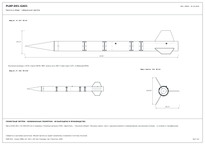

Общий чертёж и отдельные листы на все 187 позиций. Номинальная геометрия из FreeCAD, формат A3. Покупные изделия и условные объёмы обозначены отдельно. Допуски, технология и силовые соединения требуют выпуска перед изготовлением.
Общий чертёж · PDF · Все детали · PDF · Полный комплект · ZIP · Как читать · План сборки · Сверка регламента

| Поз. | Лист PDF | Тип | Масса, г |
|---|---|---|---|
| 001 | E01 боковая опора 1 PLBP-D01-P001 | Проектная деталь · материал и допуски уточнить | 14.208 |
| 002 | E01 боковая опора 2 PLBP-D01-P002 | Проектная деталь · материал и допуски уточнить | 14.208 |
| 003 | Кассета самописца: открытые каналы давления PLBP-D01-P003 | Проектная деталь · материал и допуски уточнить | 30.903 |
| 004 | Решётчатая крышка самописца: фиксация двумя лентами PLBP-D01-P004 | Проектная деталь · материал и допуски уточнить | 6.439 |
| 005 | Держатель основной батареи: бортики, вывод провода, две ленты PLBP-D01-P005 | Проектная деталь · материал и допуски уточнить | 19.796 |
| 006 | Logger M3×10: условный крепёж 1 PLBP-D01-P006 | Условный крепёж · стандарт и длина не утверждены | 1.019 |
| 007 | Logger гайка M3: цилиндрический габарит 1 PLBP-D01-P007 | Условный крепёж · стандарт и длина не утверждены | 0.453 |
| 008 | Logger M3×10: условный крепёж 2 PLBP-D01-P008 | Условный крепёж · стандарт и длина не утверждены | 1.019 |
| 009 | Logger гайка M3: цилиндрический габарит 2 PLBP-D01-P009 | Условный крепёж · стандарт и длина не утверждены | 0.453 |
| 010 | Logger M3×10: условный крепёж 3 PLBP-D01-P010 | Условный крепёж · стандарт и длина не утверждены | 1.019 |
| 011 | Logger гайка M3: цилиндрический габарит 3 PLBP-D01-P011 | Условный крепёж · стандарт и длина не утверждены | 0.453 |
| 012 | Logger M3×10: условный крепёж 4 PLBP-D01-P012 | Условный крепёж · стандарт и длина не утверждены | 1.019 |
| 013 | Logger гайка M3: цилиндрический габарит 4 PLBP-D01-P013 | Условный крепёж · стандарт и длина не утверждены | 0.453 |
| 014 | Battery M3×10: условный крепёж 1 PLBP-D01-P014 | Условный крепёж · стандарт и длина не утверждены | 1.019 |
| 015 | Battery гайка M3: цилиндрический габарит 1 PLBP-D01-P015 | Условный крепёж · стандарт и длина не утверждены | 0.453 |
| 016 | Battery M3×10: условный крепёж 2 PLBP-D01-P016 | Условный крепёж · стандарт и длина не утверждены | 1.019 |
| 017 | Battery гайка M3: цилиндрический габарит 2 PLBP-D01-P017 | Условный крепёж · стандарт и длина не утверждены | 0.453 |
| 018 | Battery M3×10: условный крепёж 3 PLBP-D01-P018 | Условный крепёж · стандарт и длина не утверждены | 1.019 |
| 019 | Battery гайка M3: цилиндрический габарит 3 PLBP-D01-P019 | Условный крепёж · стандарт и длина не утверждены | 0.453 |
| 020 | Battery M3×10: условный крепёж 4 PLBP-D01-P020 | Условный крепёж · стандарт и длина не утверждены | 1.019 |
| 021 | Battery гайка M3: цилиндрический габарит 4 PLBP-D01-P021 | Условный крепёж · стандарт и длина не утверждены | 0.453 |
| 022 | Самописец организатора · габарит A04 PLBP-D01-P022 | Габарит / резерв / условная укладка | 30.000 |
| 023 | Основное питание · габарит A04 PLBP-D01-P023 | Габарит / резерв / условная укладка | 100.000 |
| 024 | E02 опора основного блока: общий крепёж с кассетой самописца PLBP-D01-P024 | Проектная деталь · материал и допуски уточнить | 11.138 |
| 025 | M01 несущая кассета: электроника, питание, звуковые окна PLBP-D01-P025 | Проектная деталь · материал и допуски уточнить | 35.930 |
| 026 | M01 ложемент батареи: жёсткая защита без обжатия ячейки PLBP-D01-P026 | Проектная деталь · материал и допуски уточнить | 8.144 |
| 027 | M01 защитная крышка батареи: зазор 1 мм PLBP-D01-P027 | Проектная деталь · материал и допуски уточнить | 5.034 |
| 028 | M01 продольная опора полки 1 PLBP-D01-P028 | Проектная деталь · материал и допуски уточнить | 4.732 |
| 029 | M01 продольная опора полки 2 PLBP-D01-P029 | Проектная деталь · материал и допуски уточнить | 4.732 |
| 030 | M01 примерочная опора платы 1 PLBP-D01-P030 | Проектная деталь · материал и допуски уточнить | 0.389 |
| 031 | M01 примерочная опора платы 2 PLBP-D01-P031 | Проектная деталь · материал и допуски уточнить | 0.389 |
| 032 | M01 LiPo #258 · максимальный габарит TDS с PCM PLBP-D01-P032 | Габарит / резерв / условная укладка | 23.000 |
| 033 | M01 CMI-1295-85T · звуковой индикатор PLBP-D01-P033 | Габарит / резерв / условная укладка | 1.600 |
| 034 | M01 вывод индикатора: масса входит в 1,6 г PLBP-D01-P034 | Габарит / резерв / условная укладка | 0.000 |
| 035 | M01 вывод индикатора: масса входит в 1,6 г PLBP-D01-P035 | Габарит / резерв / условная укладка | 0.000 |
| 036 | M01 плата ключа и диода · отверстия индикатора с шагом 7,6 мм PLBP-D01-P036 | Габарит / резерв / условная укладка | 4.000 |
| 037 | M01 опора платы ключа 1 PLBP-D01-P037 | Проектная деталь · материал и допуски уточнить | 0.025 |
| 038 | M01 опора платы ключа 2 PLBP-D01-P038 | Проектная деталь · материал и допуски уточнить | 0.025 |
| 039 | M01 опора платы ключа 3 PLBP-D01-P039 | Проектная деталь · материал и допуски уточнить | 0.025 |
| 040 | M01 опора платы ключа 4 PLBP-D01-P040 | Проектная деталь · материал и допуски уточнить | 0.025 |
| 041 | E02 лоток с креплением автономной кассеты PLBP-D01-P041 | Проектная деталь · материал и допуски уточнить | 92.967 |
| 042 | M01 M3×10 · условный крепёж 1 PLBP-D01-P042 | Условный крепёж · стандарт и длина не утверждены | 1.019 |
| 043 | M01 гайка M3 · габарит 1 PLBP-D01-P043 | Условный крепёж · стандарт и длина не утверждены | 0.453 |
| 044 | M01 M3×10 · условный крепёж 2 PLBP-D01-P044 | Условный крепёж · стандарт и длина не утверждены | 1.019 |
| 045 | M01 гайка M3 · габарит 2 PLBP-D01-P045 | Условный крепёж · стандарт и длина не утверждены | 0.453 |
| 046 | M01 M3×10 · условный крепёж 3 PLBP-D01-P046 | Условный крепёж · стандарт и длина не утверждены | 1.019 |
| 047 | M01 гайка M3 · габарит 3 PLBP-D01-P047 | Условный крепёж · стандарт и длина не утверждены | 0.453 |
| 048 | M01 M3×10 · условный крепёж 4 PLBP-D01-P048 | Условный крепёж · стандарт и длина не утверждены | 1.019 |
| 049 | M01 гайка M3 · габарит 4 PLBP-D01-P049 | Условный крепёж · стандарт и длина не утверждены | 0.453 |
| 050 | E02 примерочная опора блока спасения: крепление к корпусу открыто PLBP-D01-P050 | Проектная деталь · материал и допуски уточнить | 22.372 |
| 051 | Корпус · секция payload PLBP-D01-P051 | Проектная деталь · материал и допуски уточнить | 265.954 |
| 052 | Корпус · секция recovery PLBP-D01-P052 | Проектная деталь · материал и допуски уточнить | 175.542 |
| 053 | Корпус · секция avionics PLBP-D01-P053 | Проектная деталь · материал и допуски уточнить | 235.582 |
| 054 | Корпус · секция control PLBP-D01-P054 | Проектная деталь · материал и допуски уточнить | 85.377 |
| 055 | Корпус · секция motor PLBP-D01-P055 | Проектная деталь · материал и допуски уточнить | 320.932 |
| 056 | Стык 610 · M3, условная длина PLBP-D01-P056 | Условный крепёж · стандарт и длина не утверждены | 0.714 |
| 057 | Стык 610 · закладная гайка, фиксация требует разработки PLBP-D01-P057 | Условный крепёж · стандарт и длина не утверждены | 0.435 |
| 058 | Стык 610 · M3, условная длина PLBP-D01-P058 | Условный крепёж · стандарт и длина не утверждены | 0.714 |
| 059 | Стык 610 · закладная гайка, фиксация требует разработки PLBP-D01-P059 | Условный крепёж · стандарт и длина не утверждены | 0.435 |
| 060 | Стык 610 · M3, условная длина PLBP-D01-P060 | Условный крепёж · стандарт и длина не утверждены | 0.714 |
| 061 | Стык 610 · закладная гайка, фиксация требует разработки PLBP-D01-P061 | Условный крепёж · стандарт и длина не утверждены | 0.435 |
| 062 | Стык 610 · M3, условная длина PLBP-D01-P062 | Условный крепёж · стандарт и длина не утверждены | 0.714 |
| 063 | Стык 610 · закладная гайка, фиксация требует разработки PLBP-D01-P063 | Условный крепёж · стандарт и длина не утверждены | 0.435 |
| 064 | Стык 610 · M3, условная длина PLBP-D01-P064 | Условный крепёж · стандарт и длина не утверждены | 0.714 |
| 065 | Стык 610 · закладная гайка, фиксация требует разработки PLBP-D01-P065 | Условный крепёж · стандарт и длина не утверждены | 0.435 |
| 066 | Стык 610 · M3, условная длина PLBP-D01-P066 | Условный крепёж · стандарт и длина не утверждены | 0.714 |
| 067 | Стык 610 · закладная гайка, фиксация требует разработки PLBP-D01-P067 | Условный крепёж · стандарт и длина не утверждены | 0.435 |
| 068 | Стык X610 · внутренняя втулка 40 мм PLBP-D01-P068 | Проектная деталь · материал и допуски уточнить | 26.437 |
| 069 | Стык X610 · прокладка, кандидат PLBP-D01-P069 | Габарит / резерв / условная укладка | 0.300 |
| 070 | Стык 815 · M3, условная длина PLBP-D01-P070 | Условный крепёж · стандарт и длина не утверждены | 0.714 |
| 071 | Стык 815 · закладная гайка, фиксация требует разработки PLBP-D01-P071 | Условный крепёж · стандарт и длина не утверждены | 0.435 |
| 072 | Стык 815 · M3, условная длина PLBP-D01-P072 | Условный крепёж · стандарт и длина не утверждены | 0.714 |
| 073 | Стык 815 · закладная гайка, фиксация требует разработки PLBP-D01-P073 | Условный крепёж · стандарт и длина не утверждены | 0.435 |
| 074 | Стык 815 · M3, условная длина PLBP-D01-P074 | Условный крепёж · стандарт и длина не утверждены | 0.714 |
| 075 | Стык 815 · закладная гайка, фиксация требует разработки PLBP-D01-P075 | Условный крепёж · стандарт и длина не утверждены | 0.435 |
| 076 | Стык 815 · M3, условная длина PLBP-D01-P076 | Условный крепёж · стандарт и длина не утверждены | 0.714 |
| 077 | Стык 815 · закладная гайка, фиксация требует разработки PLBP-D01-P077 | Условный крепёж · стандарт и длина не утверждены | 0.435 |
| 078 | Стык 815 · M3, условная длина PLBP-D01-P078 | Условный крепёж · стандарт и длина не утверждены | 0.714 |
| 079 | Стык 815 · закладная гайка, фиксация требует разработки PLBP-D01-P079 | Условный крепёж · стандарт и длина не утверждены | 0.435 |
| 080 | Стык 815 · M3, условная длина PLBP-D01-P080 | Условный крепёж · стандарт и длина не утверждены | 0.714 |
| 081 | Стык 815 · закладная гайка, фиксация требует разработки PLBP-D01-P081 | Условный крепёж · стандарт и длина не утверждены | 0.435 |
| 082 | Стык X815 · внутренняя втулка 40 мм PLBP-D01-P082 | Проектная деталь · материал и допуски уточнить | 26.437 |
| 083 | Стык X815 · прокладка, кандидат PLBP-D01-P083 | Габарит / резерв / условная укладка | 0.300 |
| 084 | Стык 1090 · M3, условная длина PLBP-D01-P084 | Условный крепёж · стандарт и длина не утверждены | 0.714 |
| 085 | Стык 1090 · закладная гайка, фиксация требует разработки PLBP-D01-P085 | Условный крепёж · стандарт и длина не утверждены | 0.435 |
| 086 | Стык 1090 · M3, условная длина PLBP-D01-P086 | Условный крепёж · стандарт и длина не утверждены | 0.714 |
| 087 | Стык 1090 · закладная гайка, фиксация требует разработки PLBP-D01-P087 | Условный крепёж · стандарт и длина не утверждены | 0.435 |
| 088 | Стык 1090 · M3, условная длина PLBP-D01-P088 | Условный крепёж · стандарт и длина не утверждены | 0.714 |
| 089 | Стык 1090 · закладная гайка, фиксация требует разработки PLBP-D01-P089 | Условный крепёж · стандарт и длина не утверждены | 0.435 |
| 090 | Стык 1090 · M3, условная длина PLBP-D01-P090 | Условный крепёж · стандарт и длина не утверждены | 0.714 |
| 091 | Стык 1090 · закладная гайка, фиксация требует разработки PLBP-D01-P091 | Условный крепёж · стандарт и длина не утверждены | 0.435 |
| 092 | Стык 1090 · M3, условная длина PLBP-D01-P092 | Условный крепёж · стандарт и длина не утверждены | 0.714 |
| 093 | Стык 1090 · закладная гайка, фиксация требует разработки PLBP-D01-P093 | Условный крепёж · стандарт и длина не утверждены | 0.435 |
| 094 | Стык 1090 · M3, условная длина PLBP-D01-P094 | Условный крепёж · стандарт и длина не утверждены | 0.714 |
| 095 | Стык 1090 · закладная гайка, фиксация требует разработки PLBP-D01-P095 | Условный крепёж · стандарт и длина не утверждены | 0.435 |
| 096 | Стык X1090 · внутренняя втулка 40 мм PLBP-D01-P096 | Проектная деталь · материал и допуски уточнить | 26.437 |
| 097 | Стык X1090 · прокладка, кандидат PLBP-D01-P097 | Габарит / резерв / условная укладка | 0.300 |
| 098 | Стык 1190 · M3, условная длина PLBP-D01-P098 | Условный крепёж · стандарт и длина не утверждены | 0.714 |
| 099 | Стык 1190 · закладная гайка, фиксация требует разработки PLBP-D01-P099 | Условный крепёж · стандарт и длина не утверждены | 0.435 |
| 100 | Стык 1190 · M3, условная длина PLBP-D01-P100 | Условный крепёж · стандарт и длина не утверждены | 0.714 |
| 101 | Стык 1190 · закладная гайка, фиксация требует разработки PLBP-D01-P101 | Условный крепёж · стандарт и длина не утверждены | 0.435 |
| 102 | Стык 1190 · M3, условная длина PLBP-D01-P102 | Условный крепёж · стандарт и длина не утверждены | 0.714 |
| 103 | Стык 1190 · закладная гайка, фиксация требует разработки PLBP-D01-P103 | Условный крепёж · стандарт и длина не утверждены | 0.435 |
| 104 | Стык 1190 · M3, условная длина PLBP-D01-P104 | Условный крепёж · стандарт и длина не утверждены | 0.714 |
| 105 | Стык 1190 · закладная гайка, фиксация требует разработки PLBP-D01-P105 | Условный крепёж · стандарт и длина не утверждены | 0.435 |
| 106 | Стык 1190 · M3, условная длина PLBP-D01-P106 | Условный крепёж · стандарт и длина не утверждены | 0.714 |
| 107 | Стык 1190 · закладная гайка, фиксация требует разработки PLBP-D01-P107 | Условный крепёж · стандарт и длина не утверждены | 0.435 |
| 108 | Стык 1190 · M3, условная длина PLBP-D01-P108 | Условный крепёж · стандарт и длина не утверждены | 0.714 |
| 109 | Стык 1190 · закладная гайка, фиксация требует разработки PLBP-D01-P109 | Условный крепёж · стандарт и длина не утверждены | 0.435 |
| 110 | Стык X1190 · внутренняя втулка 40 мм PLBP-D01-P110 | Проектная деталь · материал и допуски уточнить | 26.437 |
| 111 | Стык X1190 · прокладка, кандидат PLBP-D01-P111 | Габарит / резерв / условная укладка | 0.300 |
| 112 | Кольцо съёмного лотка Ø93,6 · 1 PLBP-D01-P112 | Проектная деталь · материал и допуски уточнить | 33.660 |
| 113 | Кольцо съёмного лотка Ø93,6 · 2 PLBP-D01-P113 | Проектная деталь · материал и допуски уточнить | 33.660 |
| 114 | Обтекатель · полая оболочка PLBP-D01-P114 | Проектная деталь · материал и допуски уточнить | 87.105 |
| 115 | Обтекатель · отдельная посадочная юбка PLBP-D01-P115 | Проектная деталь · материал и допуски уточнить | 25.558 |
| 116 | Обтекатель · переборка под интерфейс возврата PLBP-D01-P116 | Проектная деталь · материал и допуски уточнить | 37.499 |
| 117 | Обтекатель · рым, условная геометрия крепежа PLBP-D01-P117 | Условный крепёж · стандарт и длина не утверждены | 2.871 |
| 118 | Обтекатель · шайба рымового узла PLBP-D01-P118 | Условный крепёж · стандарт и длина не утверждены | 0.817 |
| 119 | Макет · оболочка Ø84, общий размер 220 мм PLBP-D01-P119 | Проектная деталь · материал и допуски уточнить | 141.335 |
| 120 | Макет · съёмная торцевая крышка Front PLBP-D01-P120 | Проектная деталь · материал и допуски уточнить | 14.030 |
| 121 | Макет · съёмная торцевая крышка Rear PLBP-D01-P121 | Проектная деталь · материал и допуски уточнить | 14.030 |
| 122 | Макет · монтажная стойка 1 PLBP-D01-P122 | Проектная деталь · материал и допуски уточнить | 5.340 |
| 123 | Макет · винт M2, габарит PLBP-D01-P123 | Условный крепёж · стандарт и длина не утверждены | 0.099 |
| 124 | Макет · винт M2, габарит PLBP-D01-P124 | Условный крепёж · стандарт и длина не утверждены | 0.099 |
| 125 | Макет · монтажная стойка 2 PLBP-D01-P125 | Проектная деталь · материал и допуски уточнить | 5.340 |
| 126 | Макет · винт M2, габарит PLBP-D01-P126 | Условный крепёж · стандарт и длина не утверждены | 0.099 |
| 127 | Макет · винт M2, габарит PLBP-D01-P127 | Условный крепёж · стандарт и длина не утверждены | 0.099 |
| 128 | Макет · монтажная стойка 3 PLBP-D01-P128 | Проектная деталь · материал и допуски уточнить | 5.340 |
| 129 | Макет · винт M2, габарит PLBP-D01-P129 | Условный крепёж · стандарт и длина не утверждены | 0.099 |
| 130 | Макет · винт M2, габарит PLBP-D01-P130 | Условный крепёж · стандарт и длина не утверждены | 0.099 |
| 131 | Макет · монтажная стойка 4 PLBP-D01-P131 | Проектная деталь · материал и допуски уточнить | 5.340 |
| 132 | Макет · винт M2, габарит PLBP-D01-P132 | Условный крепёж · стандарт и длина не утверждены | 0.099 |
| 133 | Макет · винт M2, габарит PLBP-D01-P133 | Условный крепёж · стандарт и длина не утверждены | 0.099 |
| 134 | Макет · объём собственной системы и балансировки, не разработан PLBP-D01-P134 | Габарит / резерв / условная укладка | 1308.454 |
| 135 | Макет · опорное кольцо внутри втулки стыка PLBP-D01-P135 | Проектная деталь · материал и допуски уточнить | 44.993 |
| 136 | Макет · радиальный направляющий башмак 1 PLBP-D01-P136 | Проектная деталь · материал и допуски уточнить | 0.533 |
| 137 | Макет · радиальный направляющий башмак 2 PLBP-D01-P137 | Проектная деталь · материал и допуски уточнить | 0.533 |
| 138 | Макет · радиальный направляющий башмак 3 PLBP-D01-P138 | Проектная деталь · материал и допуски уточнить | 0.533 |
| 139 | Спасение · оболочка укладочного мешка PLBP-D01-P139 | Габарит / резерв / условная укладка | 35.000 |
| 140 | Спасение · торцевая ткань 1 PLBP-D01-P140 | Габарит / резерв / условная укладка | 5.000 |
| 141 | Спасение · торцевая ткань 2 PLBP-D01-P141 | Габарит / резерв / условная укладка | 5.000 |
| 142 | Спасение · складка купола 1 (условная укладка) PLBP-D01-P142 | Габарит / резерв / условная укладка | 28.750 |
| 143 | Спасение · складка купола 2 (условная укладка) PLBP-D01-P143 | Габарит / резерв / условная укладка | 28.750 |
| 144 | Спасение · складка купола 3 (условная укладка) PLBP-D01-P144 | Габарит / резерв / условная укладка | 28.750 |
| 145 | Спасение · складка купола 4 (условная укладка) PLBP-D01-P145 | Габарит / резерв / условная укладка | 28.750 |
| 146 | Спасение · складка купола 5 (условная укладка) PLBP-D01-P146 | Габарит / резерв / условная укладка | 28.750 |
| 147 | Спасение · складка купола 6 (условная укладка) PLBP-D01-P147 | Габарит / резерв / условная укладка | 28.750 |
| 148 | Спасение · складка купола 7 (условная укладка) PLBP-D01-P148 | Габарит / резерв / условная укладка | 28.750 |
| 149 | Спасение · складка купола 8 (условная укладка) PLBP-D01-P149 | Габарит / резерв / условная укладка | 28.750 |
| 150 | Спасение · лента укладки 1 PLBP-D01-P150 | Габарит / резерв / условная укладка | 4.000 |
| 151 | Спасение · лента укладки 2 PLBP-D01-P151 | Габарит / резерв / условная укладка | 4.000 |
| 152 | Основной борт · корпус концептуального блока PLBP-D01-P152 | Проектная деталь · материал и допуски уточнить | 23.216 |
| 153 | Основной борт · съёмная крышка PLBP-D01-P153 | Проектная деталь · материал и допуски уточнить | 9.266 |
| 154 | Основной борт · опора платы 1 PLBP-D01-P154 | Проектная деталь · материал и допуски уточнить | 0.050 |
| 155 | Основной борт · опора платы 2 PLBP-D01-P155 | Проектная деталь · материал и допуски уточнить | 0.050 |
| 156 | Основной борт · опора платы 3 PLBP-D01-P156 | Проектная деталь · материал и допуски уточнить | 0.050 |
| 157 | Основной борт · опора платы 4 PLBP-D01-P157 | Проектная деталь · материал и допуски уточнить | 0.050 |
| 158 | Основной борт · проектная плата размещения, не PCB для производства PLBP-D01-P158 | Проектная деталь · материал и допуски уточнить | 15.172 |
| 159 | MCU · место на проектной плате, компонент не выбран PLBP-D01-P159 | Габарит / резерв / условная укладка | 1.000 |
| 160 | IMU · место на проектной плате, компонент не выбран PLBP-D01-P160 | Габарит / резерв / условная укладка | 1.000 |
| 161 | Barometer · место на проектной плате, компонент не выбран PLBP-D01-P161 | Габарит / резерв / условная укладка | 1.000 |
| 162 | Storage · место на проектной плате, компонент не выбран PLBP-D01-P162 | Габарит / резерв / условная укладка | 1.000 |
| 163 | Radio · место на проектной плате, компонент не выбран PLBP-D01-P163 | Габарит / резерв / условная укладка | 1.000 |
| 164 | Основной борт · габарит силового соединителя PLBP-D01-P164 | Габарит / резерв / условная укладка | 2.000 |
| 165 | Блок спасения · корпус, отдельная подсистема PLBP-D01-P165 | Проектная деталь · материал и допуски уточнить | 27.391 |
| 166 | Блок спасения · крышка PLBP-D01-P166 | Проектная деталь · материал и допуски уточнить | 7.315 |
| 167 | Блок спасения · проектная плата, исполнительная схема не выпущена PLBP-D01-P167 | Проектная деталь · материал и допуски уточнить | 10.360 |
| 168 | Блок спасения · зарезервированное место компонента PLBP-D01-P168 | Габарит / резерв / условная укладка | 2.000 |
| 169 | Блок спасения · зарезервированное место компонента PLBP-D01-P169 | Габарит / резерв / условная укладка | 2.000 |
| 170 | Моторный отсек · монтажная труба PLBP-D01-P170 | Проектная деталь · материал и допуски уточнить | 196.676 |
| 171 | Моторный отсек · кольцо с технологическими отверстиями 1 PLBP-D01-P171 | Проектная деталь · материал и допуски уточнить | 45.174 |
| 172 | Моторный отсек · кольцо с технологическими отверстиями 2 PLBP-D01-P172 | Проектная деталь · материал и допуски уточнить | 50.148 |
| 173 | K535W · только паспортный габарит покупного двигателя PLBP-D01-P173 | Габарит / резерв / условная укладка | 1264.000 |
| 174 | Хвост · ответная плита, удержание конкретного двигателя уточнить PLBP-D01-P174 | Проектная деталь · материал и допуски уточнить | 25.911 |
| 175 | Стабилизатор 1 · сквозной корень и наружное перо PLBP-D01-P175 | Проектная деталь · материал и допуски уточнить | 109.302 |
| 176 | Стабилизатор 2 · сквозной корень и наружное перо PLBP-D01-P176 | Проектная деталь · материал и допуски уточнить | 109.302 |
| 177 | Стабилизатор 3 · сквозной корень и наружное перо PLBP-D01-P177 | Проектная деталь · материал и допуски уточнить | 109.302 |
| 178 | Направляющая · площадка по кривизне корпуса 1 PLBP-D01-P178 | Проектная деталь · материал и допуски уточнить | 0.576 |
| 179 | Направляющая · ползун, проектный габарит под примерку 1 PLBP-D01-P179 | Проектная деталь · материал и допуски уточнить | 0.267 |
| 180 | Направляющая · крепёж M3, габарит 1 PLBP-D01-P180 | Условный крепёж · стандарт и длина не утверждены | 0.666 |
| 181 | Направляющая · площадка по кривизне корпуса 2 PLBP-D01-P181 | Проектная деталь · материал и допуски уточнить | 0.576 |
| 182 | Направляющая · ползун, проектный габарит под примерку 2 PLBP-D01-P182 | Проектная деталь · материал и допуски уточнить | 0.267 |
| 183 | Направляющая · крепёж M3, габарит 2 PLBP-D01-P183 | Условный крепёж · стандарт и длина не утверждены | 0.666 |
| 184 | Основная батарея · габарит разъёма PLBP-D01-P184 | Габарит / резерв / условная укладка | 2.000 |
| 185 | Провод питания · трассировка + PLBP-D01-P185 | Габарит / резерв / условная укладка | 2.000 |
| 186 | Провод питания · трассировка − PLBP-D01-P186 | Габарит / резерв / условная укладка | 2.000 |
| 187 | M01 · Feather RP2040, CAD изготовителя Adafruit PLBP-D01-P187 | Покупная сборка · габарит по CAD изготовителя | 10.000 |